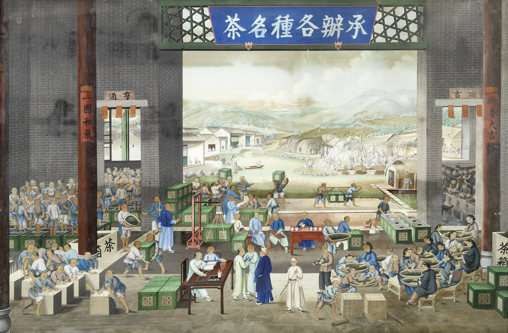

Aenean ornare velit lacus, ac varius enim lorem ullamcorper dolore aliquam.
Our theory of change is building dense networks to meet the challenges of entrepreneurship in destabilized regions. A dense network is one where there is a small number of connections between you and what or who you need.
Having a dense network around you is one of the hallmarks of social capital, and gives you access to expertise, resources, skill sharing and financing. In a dense network, there are many ways for you to get from one point to another. You can either contact an investor in San Francisco directly, or through being recommended by the expert advisor of your friends company in Cairo, or through the personal connections of your business mentor in Brussels. Destabilizing a dense network is difficult, and you can enter into them through many points of contact. To better understand how dense networks arise and create conditions for resilient entrepreneurship, we draw parallels to ancient networks of trade.
Trade and exchange has always been a way through which people share culture, create wealth and spread ideas and peace. Throughout the history of human civilization this took place along networks of routes, ways and roads.
Tea trade painting - Kwan Luen Chin (1850 circa)
Trade networks cross borders and are not centrally designed but emerge after years and years of iteration, adapting to dramatic changes such as kingdoms falling or natural events.
The Silk Road was one such structure. It arose in a turbulent world of constant conflict, connected the West with the East over thousands of kilometers, crossing different kingdoms speaking over 20 languages and lasted for more than 2000 years. It was not a single road, but rather a dense network of paths, with many alternate routes leading to the same destination. This meant that roads could be blocked, wars could be fought or that bandits could take control over certain passes without disrupting the overall capacity of the network to transport goods between the imperial cities. How does such a resilient, high bandwidth network arise?
Michael Frachetti, is an associate professor of archaeology at Washington University in St. Louis. For the past 25 years he has been studying the silk road. Through a combination of computer simulations and archeology, he has shown that these dense networks did not arise because someone planned out a trade route, but because of the movement of sheep. Thousands of sheep flow across the highlands of Central Asia, and the movement of sheep guided the movement of the people that herded them.
Photo by Mingheras Cosmin on Unsplash

Michael Frachettis talk for the Long Now Foundation in San Francisco outlined his findings on how the Silk Road came to be. Here, he is showing how his predictive models led to the discovery of Silk Road city Tashbulak.
Michael Frachettis innovation is modelling the flows of sheep to highland pastures, to predict where different nomadic communities would meet and form connections, which would then turn into the paths of the Silk Road network. In short, the movement of sheep across the highlands accelerated the rate of collision between people and communities, forming connections that then became paths of trade.

Routes predicted to be most likely used by herders by Michael Frachettis simulation. The routes predicted to be traveled most heavily are shown in red. Credit: M. Frachetti
Once connections have been established, they need to be maintained through shared culture and infrastructure. On the Silk Road networks, this need was fulfilled by the campsites, caravansaries and eventually towns and cities that arose where many paths crossed. These nodes in the network gave stability to the connections and provided a place where information was shared and relationships were build and strengthened. Finally, these networks and connections were mapped and navigation through the network became easier.
Dense networks can be fostered online and are a hallmark of social networks, but they are usually not thought of and measured as tools of development. We, at Edgeryders, have a blueprint to design and structure those dense network and create, down the road, a structure that could spread social entrepreneurship, create jobs, foster innovation and culture.
Projects, most of them addressing very local needs of the immediate community of the people working on them, increase the density of the local network.
People running projects will live and work together in houses with subsidized rent and access to project funding while in the program.
People from all houses are connected on the same digital discussion platform, with access to innovative tools for online co-creation. It’s the houses and online platforms that maintain and nurture connections, like the caravansaries and campsites of the ancient Silk Road.
Projects are presented at annual online and offline festivals for every house, increasing connection density to companies, investors and the world. Working on projects is what accelerates collisions to make our networks dense.
Finally, paths are mapped between people and projects and between unknown solutions to hard problems. We can visualize the networks in interactive graphs available to participants in the program, helping them find their way to people and solutions that they need to succeed. This is made possible with SenseStack, an innovative suite of online software developed by Edgeryders. SenseStack is also what allows us to measure the growing density of networks on a per-house basis and to do ethnographic research on the hallmarks of successful houses. This is equivalent to mapping the paths of a trade route network, allowing for better and faster trade as the maps increase in detail and quality.
In summary, we will build a dense network of physical spaces, an online network and talented people. This is the vision of Open Village, a Silk Road of innovation for the MENA region. Read more about the details of our proposal.
Aenean ornare velit lacus, ac varius enim lorem ullamcorper dolore aliquam.

Aenean ornare velit lacus, ac varius enim lorem ullamcorper dolore aliquam.

Aenean ornare velit lacus, ac varius enim lorem ullamcorper dolore aliquam.
Sed varius enim lorem ullamcorper dolore aliquam aenean ornare velit lacus, ac varius enim lorem ullamcorper dolore. Proin sed aliquam facilisis ante interdum. Sed nulla amet lorem feugiat tempus aliquam.